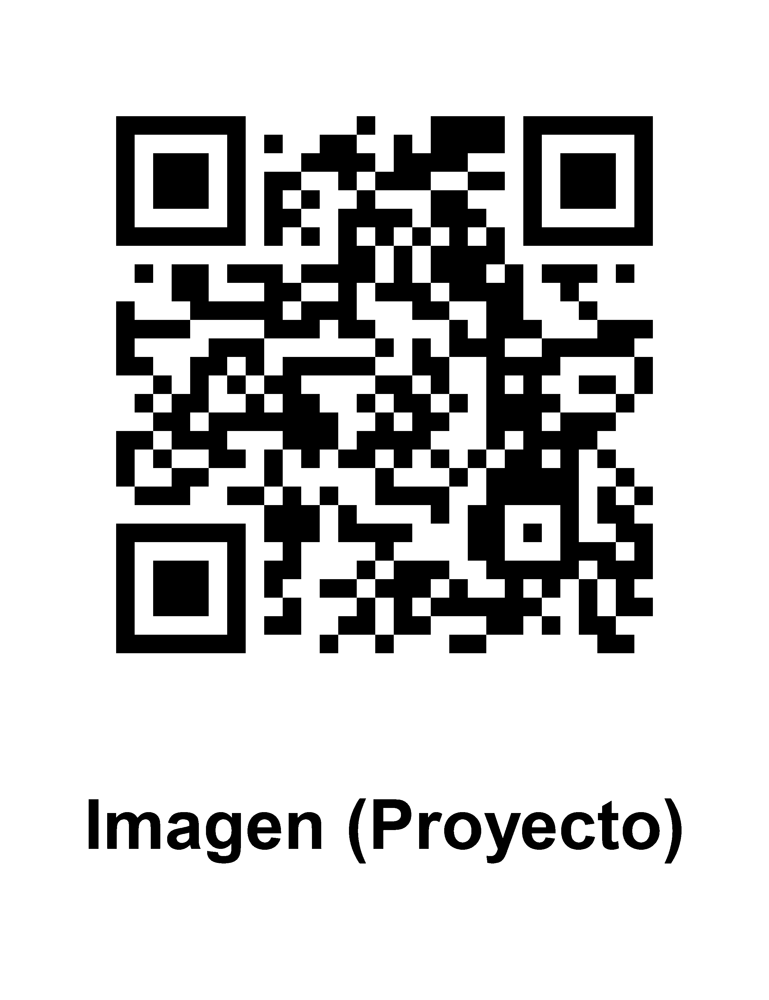
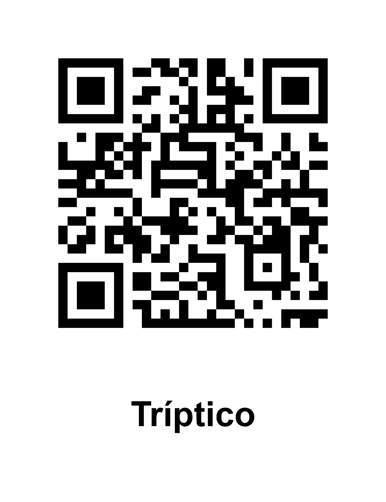

Trimestre 1 (Diseño y Desarrollo Web)
Un código QR es un código de barras bidimensional que contiene información y puede ser leído por una máquina1234. Se puede escanear con un teléfono inteligente u otro dispositivo y acceder a mensajes de texto, correos electrónicos, sitios web, números de teléfono, etc.12. La estructura general de un código QR es una matriz bidimensional de módulos de dos colores contrastados, en principio blancos y negros. Hay varias versiones de códigos QR según la cantidad de módulos que forman la matriz: van desde la versión 1 (con una matriz de 21 x 21 módulos) hasta la versión 40 (con 177 x 177 módulos). Las versiones de más módulos admiten mayor cantidad de información en el código. Los códigos más extendidos para el uso del público en general suelen ser los de 25 x 25 y de 29 x 29, para captura desde el teléfono móvil o celular en cualquier situación (paquetes de productos, folletos de mano, tarjetas o carteles de pared).


Diseño y Desarrollo Web